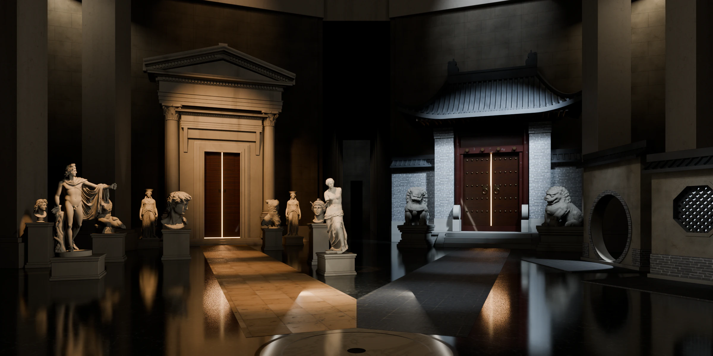

石膏像 3D 扫描：SMK, Statens Museum for Kunst 皇家石膏像收藏（公有领域）
雌石狮 3D 扫描：Rama / Wikimedia Commons，CC BY-SA 3.0 FR（已减面）
雄石狮 3D 扫描（黄大仙祠）：yoko3d / Sketchfab，CC BY 4.0（已减面、缩放）
贴图与环境光：ambientCG、Poly Haven（CC0）
字体：Noto Serif SC、Bodoni Moda（SIL Open Font License）
钢琴：德彪西《月光》（《贝加马斯克组曲》第三首）开头段，演奏 Laurens Goedhart，Wikimedia Commons，录音 CC BY 3.0（已截取、做循环并加混响）
音效：Gravity Sound 的 Open squeaky door、Leaves in the wind（Wikimedia Commons，CC BY 4.0）；另用 Kenney、Mx. Granger、Wolfgang_ 的 CC0 素材。均有改动；混响与大厅底噪为程序合成。
门厅渲染图与行进视频含 CC BY-SA 3.0 FR 素材（雌石狮），这些画面按 CC BY-SA 3.0 发布。